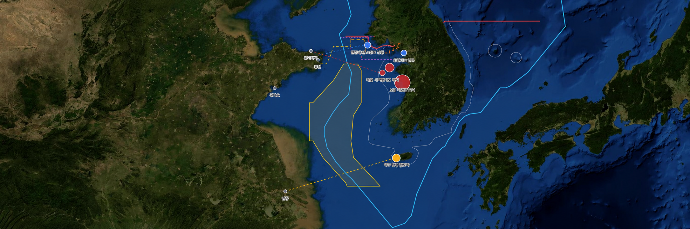

소형보트탐지
29:54
어현상 (경위)
시스템 관리자 · ID/PW
중국 소형선은 지리적으로 가깝고 감시가 어려운 서해안·제주도를 주요 경로로 활용한다. 공개 사건을 해역 단위로 정리(정확 좌표·취약시간 제외).
중국 국적 비중
90%+
최근 5년 해상 밀입국 적발
중국발 해상 밀입국
7건 41명
2023~2025 (해경 집계)
산동성 출발
6/7건
검거 41명 중 29명 한국 체류 경험
해양경찰청 검거 현황 (연도별)
2017
밀입국 20밀항 0
2018
밀입국 20밀항 1
2019
밀입국 10밀항 2
2020
밀입국 12밀항 3
2021
밀입국 1밀항 0
2022
밀입국 1밀항 2
2023
밀입국 7밀항 2
2024
밀입국 19밀항 7
밀입국 검거 2017~2024, 2024년 19건으로 급증(밀항 7건). 출처: 해양경찰청 밀입국·밀항 검거 현황(2024.12.31).
밀입국 접근 해역 분포

중국 산동반도·격렬비열도·태안의 지리적 관계 참고이며 개별 사건의 정확한 항적도는 아니다. 해역 단위 공개정보 기반의 해상 감시모델 설계 수준.
최근 주요 사건
| 시기 | 중국 출발 | 국내 접근 | 인원·수단 | 접근축 |
|---|---|---|---|---|
| 2026.5.25 | 산동 웨이하이/웨이팡(장길림) | 태안 서격렬비도 북서 | 1명 · 3.3m 고무보트 | 태안·보령 |
| 2026.3.28 | 산동 칭다오 | 제주 한경 판포리 | 2명 · 6m 소형선박 | 제주 서부 |
| 2025.10.5 | 산동 웨이하이 | 태안 가의도 북서 40km | 8명 · 소형 레저보트 | 태안·보령 |
| 2025.9.8 | 장쑤 난퉁 | 제주 한경 용수리 | 6명 · 90마력 고무보트 | 제주 서부 |
| 2025.3.8 | 산동 룽청 | 인천 옹진 소청도 남동 | 2명 · 고무보트 | 인천·옹진 |
| 2023.10.3 | 중국 동부해안 | 보령 대천항 남서 | 22명 · 소형선박 | 태안·보령 |
| 2023.8.16 | 산동 일대 | 인천대교 인근 | 1명 · 제트스키 | 인천·옹진 |
3대 접근축 (한·중)
태안·보령
최다 빈도. 격렬비열도·가의도·대천항 남서 해상. 산동/장쑤와 직선거리 짧고 섬 많아 은닉 용이.
제주 서부
장쑤 난퉁 등에서 직선 약 460km 도해 → 제주 한경(용수리·판포리) 직접 상륙 시도.
인천·옹진
제트스키·레저보트로 서해 관통 인천 앞바다 진입 → 추적·검거.
주요 수법 · 탐지 패턴
- 소형 선박 활용 — 레이더 포착이 어려운 고무보트·레저보트·제트스키
- AIS 등 위치발신장치 의도적 차단(무신호)으로 은밀 이동
- 낚시 장비 등으로 외관 위장
- 경계 느슨한 심야·새벽(01~05시) 상륙·투신 시도
- 조직적 알선 네트워크·마약 밀반입 등 타 범죄 연계 정황